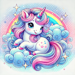

Spiel & Fantasie
Mein Einhorn-Sorglos macht aus Pflege ein kleines magisches Abenteuer.
In dieser App kümmern sich Kinder und Einhorn-Fans um ein eigenes virtuelles Wesen, spielen Minispiele, entdecken Animationen und gestalten ihr Einhorn mit verschiedenen Looks. Das Ergebnis ist eine freundliche, fantasievolle Spielerfahrung mit Herz.

Mein Einhorn-Sorglos
Pflegen, spielen und gestalten
Virtuelles Haustier
Minispiele
Skins & Animationen
Losspielen
Ein liebevoller Begleiter für kleine Fantasiewelten.
Ideal für Kinder und alle, die spielerische, bunte und freundliche App-Momente mögen.